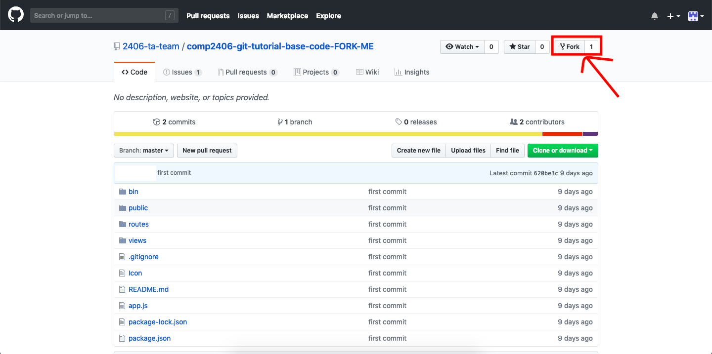
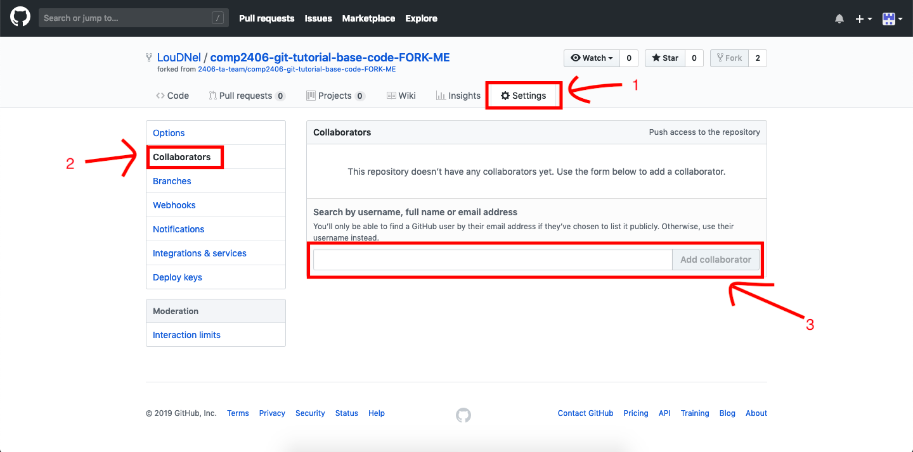
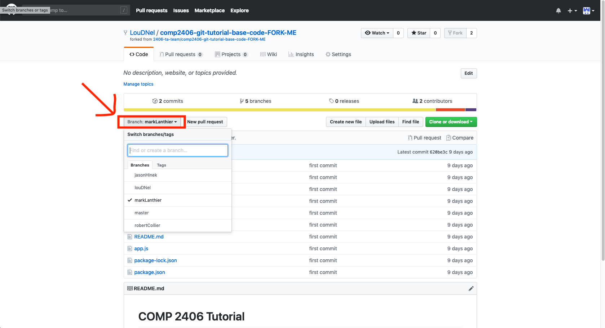
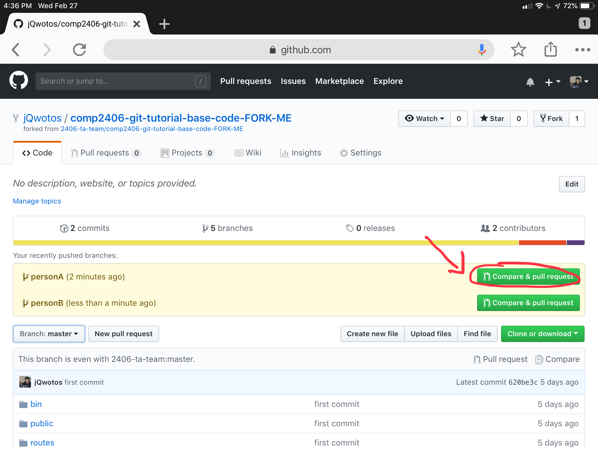

© Omar Garcia Flores, Jason Le, & L.D. Nel 2019.
Revisions:
index.jade)
The purpose of this tutorial is for you and a team of at least 1 other student with work with a given Git repository, make some modifications and deal with some of the most common features such as creating a working branch, pull requests and dealing with merge conflicts.
As background for this tutorial it is recommended that you look over the Git documentation in the following website https://guides.github.com/introduction/git-handbook/
To learn more about version control software and Git, refer to the following website: https://git-scm.com/about
Tutorial grading: 0, 1, or 2 marks. 0 marks for no show or no progress. 1 mark for partial completion, and 2 marks for completing all or most of the tutorial. Important: tutorials are meant to be started as homework. You will not generally be able to finish a tutorial if you only start it at the tutorial session.
In this tutorial you will fork a Github Repository and work on the project with other students.
This tutorial will require you to already have set up your ssh key with your github account. If you haven't finished such requirement, you must complete part 2 of Tutorial 6.
You will need to form teams of 2 to 4 people.
Sign into https://github.com
Only one team member must visit https://github.com/2406-ta-team/comp2406-git-tutorial-base-code-FORK-ME and fork the repository by clicking on the fork button

Note: only one person needs to add all the collaborators
Head to your projects' settings
Click on the Collaborators tab on the left hand bar and then enter the GitHub usernames of your team members. Click on 'Add Collaborator' once the correct username is selected.

Note: Everyone in the team must perform the following steps individually
Navigate to your GitHub projects folder using your terminal
Get the URL for the forked repository under the green Clone or Download button
git clone <URL>
Create seperate for branches for each team member within the folder, ach branch MUST have a unique name
cd comp2406-git-tutorial-base-code
git checkout -b <NAME OF YOUR BRANCH>
Example
Notes:
Specifying the
-bflag on thegit checkoutcommand specifies git to create a new branch if it doesn't existWe can also switch branches by using the following command
git checkout [NAME OF YOUR BRANCH]Branches are case sensitive

Each tem member must create their own page with the filename LouDNel.jade (changing LouDNel to your name) inside of /views folder with the following contents (changing Lou D Nel with your name)
Example
/views/LouDNel.jade
extends layout
block content
h1= title
p Hi! My name is Lou D Nel
After creating the pages we must track them and add them to the origin repository by following the next steps.
Note that since we are using different branches, we will need to use a slightly modified command to push
Each person will have to push their code changes to their respective branches using the following commands (replacing [SOME USEFUL COMMIT MESSAGE] with the approrpiate text)
git add -A
git commit -m "SOME USEFUL COMMIT MESSAGE"
git push origin <NAME OF YOUR BRANCH>
Example
Notes
We need to specify the
originlocation on this push because git will automatically name the remote (that exist on github) origin
Now on Github you should see all of the team members branches under the branch tab.
The TA may request you to show them the branches on Github.
After having succesfully pushed all the different branches onto GiHub, we will create a pull request per branch.
Each team member must follow the following steps to create a pull request:
Compare & Pull Request
make sure that the base: master branch is selected
Select the Create Pull Request to create the pull request
Note:
A pull request is way for someone to submit a code change to a repository. Instead of pushing directly to the
masterbranch it's better to create pull request so it doesn't affect the main code immediately.
DO NOT delete your branch once your pull request was succesfully merged onto the master branch.
index.jade)You must now pull all the changes that were made into your current branch by entering the following command:
git pull origin <NAME OF YOUR BRANCH>
One at a time, each person create a pull request from their branch to the master branch
Each person should INDIVIDUALLY modify the index.jade file (in the views folder) and change the text from
Congrats! Now go back to the tutorial
to something else (keep it unique, everyone should have different text)
For example, your file should look something like this after
index.jade
extends layout
block content
h1= title
p COMP 2406 is the best course!
Each person, one at a time must now add the changes to the repository.
Note that since we are using different branches, we will need to use a slightly modified command to push
Each person will have to push their code changes to their respective branches using the following commands (replacing [STUFF] with the approrpiate text)
git add -A
git commit -m "SOME USEFUL COMIT MESSAGE"
git push origin <NAME OF YOUR BRANCH>
Example
We need to specify the origin location on this push because git will automatically name the remote (that exist on github) origin
Each team member must follow the following steps to create a pull request:
Compare & Pull RequestNote:
A pull request is way for someone to submit a code change to a repository. Instead of pushing directly to the
masterbranch it's better to create pull request so it doesn't affect the main code immediately.
Back on your terminal, we run the following commands to resolve the merge conflict
git fetch origin
git checkout master
git pull
git checkout <BRANCH NAME>
git merge master
You will receive the error
Auto-merging views/index.jade
CONFLICT (content): Merge conflict in views/index.jade
Automatic merge failed; fix conflicts and then commit the result.
and your index.jade should now look like
extends layout
block content
h1= title
<<<<<<< HEAD
p I think Javascript is better than Python
=======
p Python <3
>>>>>>> master
This is a merge conflict, when two people have modified the same file and we need to combine the code together.
To do so, we will mesh both paragraphs together so by removing the
<<<<<<< HEAD, ======= and >>>>>>> master which are the indicators for merge conflicts.
At the end of it, your file should look something like this
extends layout
block content
h1= title
p I think Javascript is better than Python
p Python <3
and now we can push the changes to master
git add -A
git commit -m "resolved merge conflicts"
git push origin <BRANCH NAME>
git checkout master
git merge --no-ff <BRANCH NAME> -m "MESSAGE"
git push origin master
If you chose to work with a partner during the assignments, you may find it useful to work on it simultaneously. This is where liveshares are handy. They are essentially a google docs for coding
For this tutorial you can chose either to use VSCode liveshare or Atom Teletype (YOU DO NOT NEED TO DO BOTH).
These pluggins will allow you and your teammates to have real time collaboration with your code. Imagine being able to convert your current file into a Google sheets like document in which you can have many people typing at once.
https://marketplace.visualstudio.com/items?itemName=MS-vsliveshare.vsliveshare